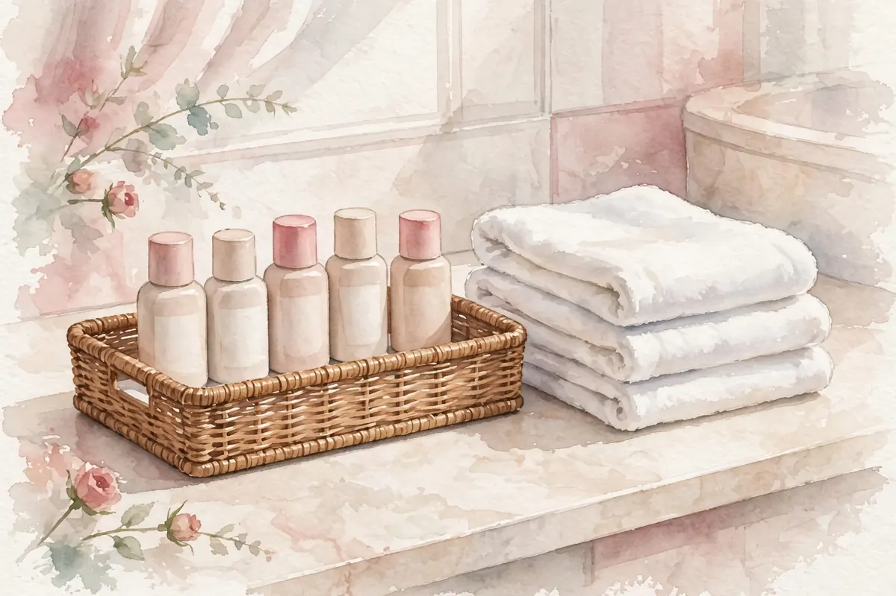

トップ ＞ スキンケア ＞ 宿泊先のアメニティを使うときの確認点
宿泊先のアメニティを使うときの確認点

旅先のホテルや温泉宿で用意されているアメニティは、荷物を減らせる便利な存在です。一方で、普段と違うアイテムを突然使うことにもなります。使う前に少しだけ確認しておくと、旅先での肌のトラブルを避けやすくなります。この記事では、確認のポイントを整理します。
まず容器の表示を見る
アメニティにも、商品名や用途、使い方の表示があります。シャンプーとコンディショナー、化粧水と乳液など、似た容器が並んでいることも多いので、取り違えを防ぐためにも、使う前に用途を確認してください。外国語表記のみの場合は、フロントで尋ねるのも一つの方法です。
個包装の使い切りタイプと、浴室に据え付けられた大容量タイプがあります。大容量タイプは、詰め替えの管理が宿側で行われているものです。容器の口まわりの清潔さが気になる場合は、無理に使わず、持参品を使う判断もあって構いません。
持参品との組み合わせを考える
旅の荷物を減らしたいときは、「落とすケアは宿のもの、付けるケアは持参品」のように役割を分けると、相性の読めないアイテムを顔に使う範囲を絞れます。とくに、普段から肌の調子が変わりやすい方は、仕上げのアイテムだけでも使い慣れたものを持っていくと安心です。
逆に、宿のアメニティを試す楽しみもあります。その場合は、帰宅後に調子が変わっても原因を追えるよう、旅の間は新しいものを一度に何種類も使わないのが穏やかです。楽しむことと、慎重さは両立できます。
合わないと感じたときのために
旅先で肌に合わないと感じたら、そのアイテムの使用を止め、ぬるま湯でやさしく洗い流してください。持参の最小セットがあれば、それに切り替えられます。症状が強い場合や続く場合は、旅先でも無理をせず、医療機関への相談を検討してください。
旅先で赤み・かゆみ・腫れなどの異常が出た場合は、そのアイテムの使用を中止してください。症状が続く・強い場合は、皮膚科などの専門家に相談してください。
温泉や大浴場では、持ち込みの配慮も
温泉宿の大浴場では、備え付けのアイテムが用意されていることが多く、私物の持ち込みについては施設の案内に従うのが基本です。持参したアイテムを使う場合も、場所を譲り合うなど、共有空間での配慮は家庭の浴室とは少し違います。旅のケアは、肌の確認と同時に、場の作法も含めて考えるものです。
部屋に戻ってからのケアは、入浴で温まった直後のタイミングになります。持参した仕上げのアイテムを部屋に用意しておくと、流れが途切れません。アメニティに頼る部分と、持参品で固める部分。その線引きを旅の前に一度考えておくことが、荷造りの指針になります。
連泊の旅行では、初日に使ったアメニティの様子が、2日目以降の判断材料になります。初日の夜と翌朝に、いつもと違う感触がなければ、その旅の間は同じもので過ごす計画が立てられます。逆に、初日で合わないと感じたら、早めに持参品へ切り替える判断ができます。
旅のケアは、荷物の少なさと安心のバランスです。すべてを持っていく必要はありませんが、「これだけは自分のものを使う」という軸があると、アメニティの活用も気軽になります。軸を決めるのは、旅の前の自分です。
アメニティの確認は、出張の多い方ほど型にしておく価値があります。チェックイン後に部屋の備え付けを確認し、足りないものや合わなそうなものを早めに把握する。この数分の確認が、その滞在のケアの計画になります。フロントに相談できることもありますから、遠慮は要りません。
宿泊先のアイテムは、その土地の水との相性も関係します。同じアイテムでも、家とは感触が違うと感じることがあります。旅先の変化は、アイテムのせいとは限りません。判断は、帰宅後の普段の環境に戻ってからでも遅くはないのです。
旅は非日常です。ケアまで完璧にしようとせず、確認の型だけを持っていく。その軽さが、旅先でのケアのちょうどよい距離感だと感じています。
セラフィナ「旅先でも、表示を見る習慣は持っていけるんだね。確認は小さな安心だよ」

セラフィナ｜美容の道具箱の案内役
「量と表示が分かれば、美容は失敗しない。」——セラフィナと白猫のモコが、買う前のチェックポイントを案内します。綺麗になりたい気持ちに正直に、でも表示は冷静に読むのが、このサイトの約束です。